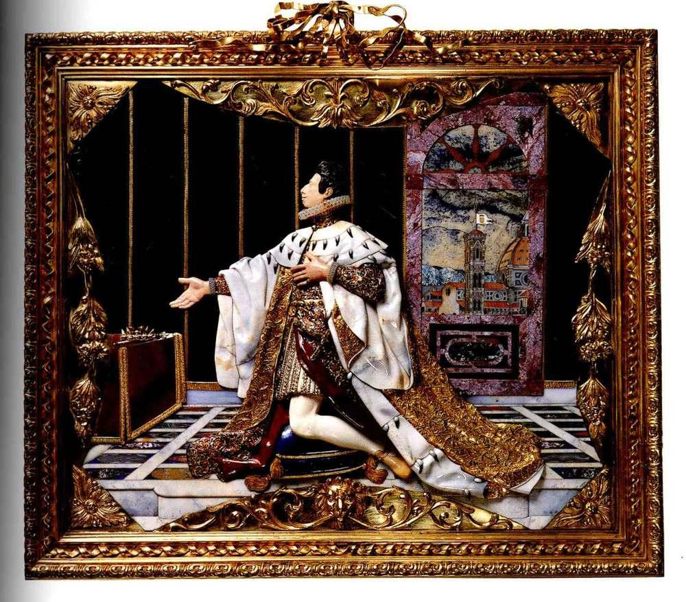

🏛️ Il Tesoro dei Medici – Project Documentation
1. Exhibition Overview

2. Objectives of the Project
- 1) To use LLMs such as Pi AI and ChatGPT to produce new knowledge and propose RDF triples.
- 2) To enrich the ArCo ontologies using the SPARQL endpoint and the LLM's output.
3. Methodology Step-by-Step
- 1) selecting the topic by querying the KG;
- 2) exploring ArCo's ontology to identify classes;
- 3) retrieving the existing information about our event from the KG;
- 4) stating the main problem to solve during the project;
- 5) engineering the prompts for the LLMs;
- 6) comparing LLMs' outputs;
- 7) designing new triples, thus enriching ArCo's ontology;
- 8) website creation and publishing.
4. Challenges Faced During the Project Preparation
Problem: While using the LLMs to design the SPARQL-queries, it was clear that not all of them understand the ArCo ontology and use it to generate their output. Sometimes they are wrong identifying classes existing in the ArCo.
Solution: To explore the ontologies myself by hand, then to teach the LLMs to use the right names of the predicates, classes, properties (e.g., instead of cis:eventOrganiser to use event:isEventOrganiserof).
Problem: The very narrow topic and missing information in ArCo – the information on the chosen topic presented in ArCo is clearly insufficient, so the ways to enrich it are many. To identify the most necessary gaps to fill was a challenge. Moreover, the event was held long time ago, so even on the Internet it is difficult to find reliable sources to check the information.
Solution: To search for more sources in different languages, engineer more detailed prompts for LLMs, double-check everything; identify the priorities in order to enrich ArCo with the necessary piece of information.
5. SPARQL Queries & Results
Query 1: Events in Moscow
Description: Since we have decided to work on the events combining Russian and Italian cultural heritage, the initial first step is choosing an event.
The main cities to consider in Russia are Moscow and Saint-Petersburg. The query for Saint-Petersburg (rdfs:label "Pietroburgo") has shown only one event (link 1) held in 1902, while the query for Moscow (rdfs:label "Mosca") has shown much more options (link 2). My choice was "Il Tesoro dei Medici", 2011, since a) it is a modern event and it is easier to find relevant information about it; b) ... .
Query 2: Describe Event IRI
Description: The first thing needed to be done is to determine the information about my event that is already present in the ArCo. Exploring the KG's ontology, we are able to identify and use classes and properties that can be used to model a needed query.
The task can be done in a couple of ways. For instance, on the left I have provided SPARQL-query requesting all the information available about the event in the form of microdata document. Along with the place, name (rdfs:label OR l0:name) and the date (tiapit:time) of my event, I have successfully found the information about the type of the event (rdf:type) and a cultural entity involved – unfortunately, only one entity is presented in the microdata document (cis:involvesCulturalEntity) (link 3).
However, by comparing the events held in different cities, we can assume that for each of them the pieces of information indicated are these:
- a) name of the event (rdfs:label OR l0:name);
- b) type of the event (rdf:type);
- c) paintings, sculptures, other masterpieces presented (cis:involvesCulturalEntity);
- d) date of the event (ti:time).
Query 3: All Properties of the Event
Description: However, I wanted to focus on two specific missing things for my event. When I have checked via SPARQL whether they exist, the answer from ArCo made it clear they are not presented in the KG. Those things are as following:
a) what museum held my event in Moscow (e.g., through clv:hasSpatialCoverage) – no response, empty table;
b) who has organised my event (e.g., through "arco:hasEventOrganiser ?organiser") – no response, empty table.
Checking the results with the SPARQL-query that allows us to see all the features of the specific event (provided on the left, plus see link 4), we receive the proof ArCo misses the specific place of the event and its organisers. Those are the problems we are focusing on.
6. Using AI Tools to Enrich the Knowledge Graph
Step 1: Questions
The next step is to ask the AI tools to provide us with all the necessary information. We use ChatGPT, since it is one of the most versatile conversational and "reliable" AI tool. Nevertheless, we will be comparing ChatGPT's responses to those of Pi AI known as "the first emotionally intelligent AI", as indicated on its website.
We will use three prompting techniques:
1) Zero-shot
Provide me with necessary information on the cultural event "Il Tesoro dei Medici".
2) Few-shot
Provide me with necessary information on the cultural event "Il Tesoro dei Medici".
For example:
Input 1:
Provide me with necessary information on the cultural event "Through the Centuries From Giotto to Malevich".
Output 1:
Name of the event: "Through the Centuries From Giotto to Malevich"
Date: 2005
Place: Russia, Moscow, The Kremlin Museums
Organisers: The Ministry of Foreign affairs, "Museo Puškin delle belle arti"
Input 2:
Provide me with necessary information on the cultural event "The Unknown Schukin".
Output 2:
Name of the event: "The Unknown Schukin"
Date: 2025-2026
Place: Russia, Moscow, The Kremlin Museums
Organisers: The Gallery of European Art
3) Chain-of-thought (Few-Shot CoT)
Provide me with necessary information on the cultural event "Il Tesoro dei Medici".
For example:
Input:
Provide me with necessary information on the cultural event "Through the Centuries From Giotto to Malevich".
Output:
The event "Through the Centuries From Giotto to Malevich". The most basic information about any event is the date and the place of it. Thus, the date of the event was May 2011 – there is the source [the source]. Then, the event, according to [this source], was held in Russia, Moscow, in the Kremlin Museums. Another vital point needed to be considered while investigating an event is the organisers of it. For the currently explored event, the organisers are The Ministry of Foreign affairs and the "Museo Puškin delle belle arti" [the source].
Let's think step by step.
Step 2: Answers
1) Zero-shot
🤖 ChatGPT
the tool managed to provide with almost all the information found about the event that cannot directly be categorized as "necessary". The model has also indicated the sources (pic. 1).
🟣 Pi AI
the LLM, especially compared to ChatGPT's output, has provided with little information on the event, not covering the needed aspects in its' output (pic. 2).
The conclusion: Pi AI requires more detailed engineered prompt.
2) Few-shot
🤖 ChatGPT
the model followed the suggested output format perfectly. The source checking proved the information true (pic. 3).
🟣 Pi AI
the tool followed the suggested output format, although adding some new information (the curators of the event). The source checking proved the information true (pic. 4).
The conclusion: ChatGPT strictly followed the prompt, whilst Pi AI requires more detailed engineered prompt to align with the instructions.
3) Chain-of-Thought
🤖 ChatGPT
the tool's output is full and rich with all the sources indicated. The source checking proved the information true (pic. 5).
🟣 Pi AI
the output is much shorter compared to that of ChatGPT. Nevertheless, it answers the main questions indicated in the project. Although the LLM failed to provide any sources. The source checking proved the information false (pic. 6).
The conclusion: Pi AI failed to provide trustful information whilst ChatGPT's output was not only truthful, but also covered all the needed aspects.
The general conclusion: ChatGPT, although adding too much context to its replies (except of the Few-shot technique prompting), is more reliable LLM and will be used for this project. For less reliable AI tools, the more detailed engineering of the prompt is required. Moreover, for our project Few-Shot prompting proved to be the most efficient one, since with this technique provides us with the most clear, transparent and no-unnecessary-information output.
7. Enriching ArCo Ontology with New Triples
Triple A: Spatial Coverage (Museum)
Solving problem a) what museum held my event in Moscow.
Now, combining the ArCo ontology fully provided in its dictionaries and LLMs, we design new triples, thus enriching the ArCo ontology.
The answer that we know: the event occurred in Russia, Moscow, in the Armoury Chamber of the Kremlin Museums.
The new triple: Il Tesoro dei Medici – hasSpatialCoverage – the Kremlin Museums
The SPARQL-query through the ArCo ontology and ChatGPT is provided on the left.
Triple B: Event Organiser
Solving problem b) who has organised my event.
The answer that we know: the event was organised by Gallerie degli Uffizi, Florence.
The new triple: Gallerie degli Uffizi – isEventOrganiserof – Il Tesoro dei Medici
OR
Il Tesoro dei Medici – hasEventOrganiser – Gallerie degli Uffizi
The SPARQL-query through the ArCo ontology and ChatGPT for the first option is provided on the left.
8. SPARQL Queries with New Triples
Now, let's ask the LLM to provide us with the whole SPARQL-query suitable for the ArCo's endpoint using new triples.
The query for ChatGPT:
Triple 1: https://w3id.org/arco/resource/CulturalEvent/4c88dc5e0662f98f9c0ff26a0b51e4d3 clv:hasSpatialCoverage https://w3id.org/arco/resource/GeographicalFeature/d3e863b4c91bff6d3a274e923e9e5968/MuseiDelCremlino
Triple 2: https://w3id.org/arco/resource/CulturalInstituteOrSite/DBunicoCG20403 event:isEventOrganiserof https://w3id.org/arco/resource/CulturalEvent/4c88dc5e0662f98f9c0ff26a0b51e4d3
Triple 3: https://w3id.org/arco/resource/CulturalEvent/4c88dc5e0662f98f9c0ff26a0b51e4d3 event:hasEventOrganiser https://w3id.org/arco/resource/CulturalInstituteOrSite/DBunicoCG20403
The LLM's output is provided below:
SPARQL-query 1
SPARQL-query 2
SPARQL-query 3
9. How Else These Triples Can Be Seen
Triple A
Il Tesoro dei Medici – hasSpatialCoverage – the Kremlin Museums
(https://w3id.org/arco/resource/CulturalEvent/4c88dc5e0662f98f9c0ff26a0b51e4d3, https://w3id.org/italia/onto/CLV/hasSpatialCoverage, https://w3id.org/arco/resource/GeographicalFeature/d3e863b4c91bff6d3a274e923e9e5968/MuseiDelCremlino)
Triple B (Option 1)
Gallerie degli Uffizi – isEventOrganiserof – Il Tesoro dei Medici
(https://w3id.org/arco/resource/CulturalInstituteOrSite/DBunicoCG20403, https://w3id.org/arco/ontology/cultural-event/isEventOrganiserOf, https://w3id.org/arco/resource/CulturalEvent/4c88dc5e0662f98f9c0ff26a0b51e4d3)
Triple B (Option 2)
Il Tesoro dei Medici – hasEventOrganiser – Gallerie degli Uffizi
(https://w3id.org/arco/resource/CulturalEvent/4c88dc5e0662f98f9c0ff26a0b51e4d3, https://w3id.org/arco/ontology/cultural-event/hasEventOrganiser, https://w3id.org/arco/resource/CulturalInstituteOr